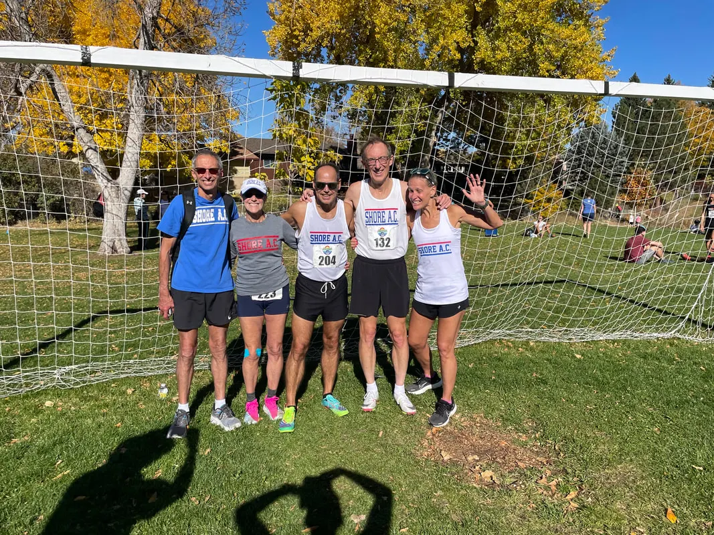

October 22, 2022, Boulder, CO: Having finally caught their breath after running a 5K cross country race at 5,400 feet elevation, Shore AC harriers mug for the cameras. Left to right: Reno Stirrat (our sidelined coach), Susan Stirrat, Don Schwartz, Scott Linnell and Alysia Puma. Not pictured: Stan Edelson, who was probably in the beer garden celebrating his podium finish in the 80-84 age group.
Shore AC Results for the 2022 USATF Masters National 5K Cross Country Championships in Boulder, CO
Race date: October 22, 2022 Full results from USATF: click here:
Picture album from USATF: click here.
Video women's & men's race starts by Reno Stirrat: click here.
SHORE AC TEAM RESULTS:
60+ Men A:
9 SHORE ATHLETIC CLUB M 60+ A 83 1:22:09 AVERAGE: 27:23
Bib Name Age Place Cum Time Cum Time Back
1 204 Donald Schwartz 62 23 23 23:46 23:46 4:50
2 132 Scott Linnell 66 25 48 24:22 48:07 5:25
3 76 Stan Edelson 81 35 83 34:03 1:22:09 15:07
Picture album from USATF: click here.
Video women's & men's race starts by Reno Stirrat: click here.
SHORE AC TEAM RESULTS:
60+ Men A:
9 SHORE ATHLETIC CLUB M 60+ A 83 1:22:09 AVERAGE: 27:23
Bib Name Age Place Cum Time Cum Time Back
1 204 Donald Schwartz 62 23 23 23:46 23:46 4:50
2 132 Scott Linnell 66 25 48 24:22 48:07 5:25
3 76 Stan Edelson 81 35 83 34:03 1:22:09 15:07
October 22, 2022, Boulder, CO: Susan Stirrat (left) and Alysia Puma (right) await the 1:00 pm start of the masters women's championship race.
Final Race of 2022 National Grand Prix Yields More Gold for Shore AC!
This year, 2022, is one to remember for Shore Athletic Club fans. We have accomplished much, as teams and as individuals, at both state and national levels. While the state-level USATF-NJ Long Distance Running (LDR) Grand Prix continues, the USATF Masters National LDR Grand Prix concluded this past weekend with the 5K Cross Country Meet in Boulder, Colorado. Team and individual Grand Prix placements were finally settled after a 10-race ordeal.
With great pride, we can report that not one but *TWO* Shore AC age group teams won the 2022 USATF Masters National Grand Prix! Readers will recall that our men's 60+ team wrapped up first place in the GP on September 18 with their victory in the By Hook or By Crook 12K race. But the winner of the women's 50+ division remained in doubt. The 5K XC race in Boulder would decide whether Shore AC would remain atop the W50+ standings or be supplanted by The Janes Elite of California. If Janes Elite could finish at least fifth at Boulder, they would grab the crown.
Much to the relief of SAC supporters, The Janes Elite failed to muster a team for Boulder. Consequently, the Shore AC 50+ ladies are your 2022 national champions!
Our teams were fortunate to do the heavy lifting at prior Grand Prix races, for we sea-level runners found Boulder's mile-high elevation to be especially challenging. Thankfully, Reno urged us to start the race easy so as not to slip into oxygen deficit too soon. Alyisa Puma heeded Reno's advice yet still struggled, crossing the finish line in 26:17 about 4 minutes slower than what she likely would have clocked at sea level. Siusan Stirrat applied Reno's recommendation successfully, achieving equal splits on her way to a 29:57 finish. Note that, because we lacked a third female, we were unable to enter a women's team.
We did manage to scrape together three old fogies for a Shore AC men's 60+ team at Boulder. Don Schwartz led the charge, gasping at the thin air while straining every fiber of his body to cross in 23:46. Scott Linnell took a more conservative approach. He practically walked up hills, saving his strength to stride quickly down hills and thereby eke out a 24:23. Our esteemed octogenarian, Stan Edelson, wrapped up team scoring when he powered across the timing mat in 34:03, good for second place in his 80-84 age group. Yes, we finished last among 60+ teams. But, hey, we did displace a number of other contestants in our goal to act as "spoilers". We also knew that, regardless of the outcome at Boulder, our Shore AC men's 60+ had sewn up first place in the Grand Prix. Hooray!
With great pride, we can report that not one but *TWO* Shore AC age group teams won the 2022 USATF Masters National Grand Prix! Readers will recall that our men's 60+ team wrapped up first place in the GP on September 18 with their victory in the By Hook or By Crook 12K race. But the winner of the women's 50+ division remained in doubt. The 5K XC race in Boulder would decide whether Shore AC would remain atop the W50+ standings or be supplanted by The Janes Elite of California. If Janes Elite could finish at least fifth at Boulder, they would grab the crown.
Much to the relief of SAC supporters, The Janes Elite failed to muster a team for Boulder. Consequently, the Shore AC 50+ ladies are your 2022 national champions!
Our teams were fortunate to do the heavy lifting at prior Grand Prix races, for we sea-level runners found Boulder's mile-high elevation to be especially challenging. Thankfully, Reno urged us to start the race easy so as not to slip into oxygen deficit too soon. Alyisa Puma heeded Reno's advice yet still struggled, crossing the finish line in 26:17 about 4 minutes slower than what she likely would have clocked at sea level. Siusan Stirrat applied Reno's recommendation successfully, achieving equal splits on her way to a 29:57 finish. Note that, because we lacked a third female, we were unable to enter a women's team.
We did manage to scrape together three old fogies for a Shore AC men's 60+ team at Boulder. Don Schwartz led the charge, gasping at the thin air while straining every fiber of his body to cross in 23:46. Scott Linnell took a more conservative approach. He practically walked up hills, saving his strength to stride quickly down hills and thereby eke out a 24:23. Our esteemed octogenarian, Stan Edelson, wrapped up team scoring when he powered across the timing mat in 34:03, good for second place in his 80-84 age group. Yes, we finished last among 60+ teams. But, hey, we did displace a number of other contestants in our goal to act as "spoilers". We also knew that, regardless of the outcome at Boulder, our Shore AC men's 60+ had sewn up first place in the Grand Prix. Hooray!
October 22, 2022, Boulder, CO: Scott Linnell tries to match uphill strides with 74-year-old Jerry Learned of the Atlanta Track Club. Photo by Alysia Puma.
USATF Masters National LDR Grand Prix Results
(See full USATF Masters National LDR Grand Prix team results here, individual men's results here and individual women's results here.)
> Shore AC Teams
We will remember this year 2022 for a long time! Shore AC age group teams won not one but *TWO* national championships! Here are unofficial Shore AC team results in the 2022 USATF Masters National LDR Grand Prix
Division Place Team Points Races
* Women's 40+ 8. Shore Athletic Club A 100 1
* Women's 50+ 1. Shore Athletic Club A 440 6
* Women's 60+ 10. Shore Athletic Club A 80 1
* Men's 40+ 12. Shore Athletic Club A 120 2
* Men's 50+ 6. Shore Athletic Club A 220 4
* Men's 60+ 1. Shore Athletic Club A 480 7
* Men's 60+ 7. Shore Athletic Club B 140 3
* Men's 60+ 23. Shore Athletic Club C 55 1
* Men's 70+ 5. Shore Athletic Club A 195 3
> Shore AC Individual GP Medalists
Shore AC athletes lit up the individual leaderboards in the USATF Masters National LDR Grand Prix. With the final race -- namely Boulder -- now completed, we can congratulate these Shore AC stars for their podium achievements in the 2022 USATF Masters National LDR Individual Grand Prix.
* M60-64: Rick Lee, 2nd place (480 points, tied with Tim DeGrado)
* M65-69: Kevin Dollard, 1st place (450 points)
* M65-69: Reno Stirrat, 2nd place (410 points)
* W55-59: Suzanne La Burt, 1st place (475 points)
* W65-69: Susan Stirrat, 1st place (440 points)
(See full USATF Masters National LDR Grand Prix team results here, individual men's results here and individual women's results here.)
> Shore AC Teams
We will remember this year 2022 for a long time! Shore AC age group teams won not one but *TWO* national championships! Here are unofficial Shore AC team results in the 2022 USATF Masters National LDR Grand Prix
Division Place Team Points Races
* Women's 40+ 8. Shore Athletic Club A 100 1
* Women's 50+ 1. Shore Athletic Club A 440 6
* Women's 60+ 10. Shore Athletic Club A 80 1
* Men's 40+ 12. Shore Athletic Club A 120 2
* Men's 50+ 6. Shore Athletic Club A 220 4
* Men's 60+ 1. Shore Athletic Club A 480 7
* Men's 60+ 7. Shore Athletic Club B 140 3
* Men's 60+ 23. Shore Athletic Club C 55 1
* Men's 70+ 5. Shore Athletic Club A 195 3
> Shore AC Individual GP Medalists
Shore AC athletes lit up the individual leaderboards in the USATF Masters National LDR Grand Prix. With the final race -- namely Boulder -- now completed, we can congratulate these Shore AC stars for their podium achievements in the 2022 USATF Masters National LDR Individual Grand Prix.
* M60-64: Rick Lee, 2nd place (480 points, tied with Tim DeGrado)
* M65-69: Kevin Dollard, 1st place (450 points)
* M65-69: Reno Stirrat, 2nd place (410 points)
* W55-59: Suzanne La Burt, 1st place (475 points)
* W65-69: Susan Stirrat, 1st place (440 points)
October 22, 2022, Boulder, CO: Alysia Puma crosses the finish line wondering which way to the nearest oxygen bar.
October 22, 2022, Boulder, CO: Shore AC, friends and family gather at Avanti F & B to enjoy good food, drink and company on the eve of the big race. Left to right: Alysia Puma, Scott Linnell, Tim Riccardi (Genesee Valley Harriers), Mary Swan (Greater Philadelphia Track Club), Reno Stirrat, Susan Stirrat's son Jack, Susan Stirrat, Stan Edelson and Don Schwartz.
October 22, 2022, Boulder, CO: Wearing his Shore AC singlet, Brian Hill The Younger shadows the leaders in the Open 5K XC race that preceded the USATF Masters National 5K XC races. Biran would maintain his position, finishing third with an excellent sub-18-minute performance.